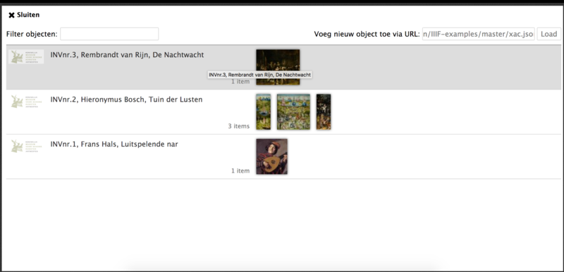
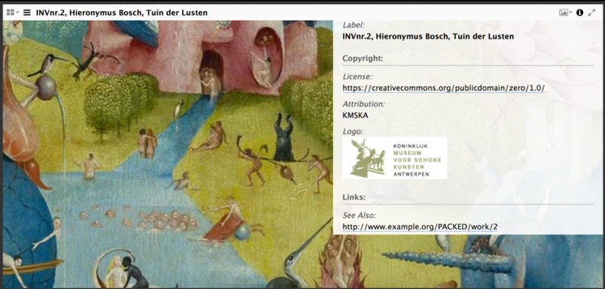
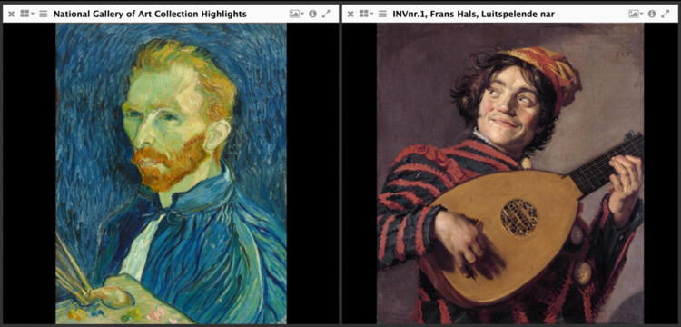
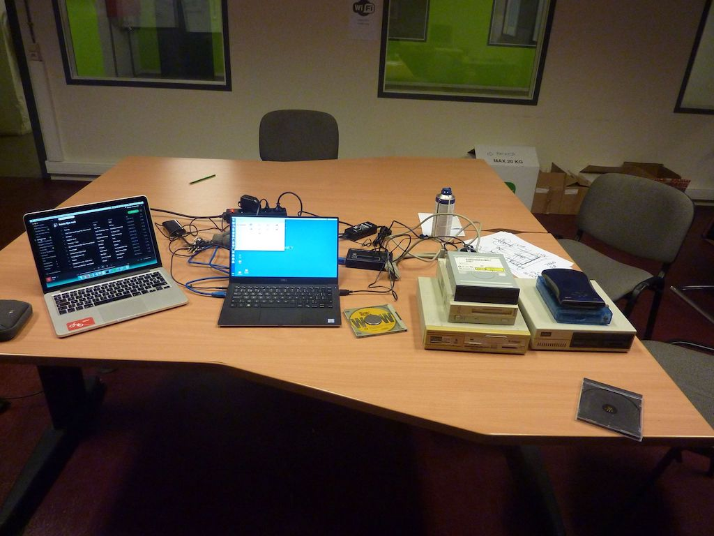
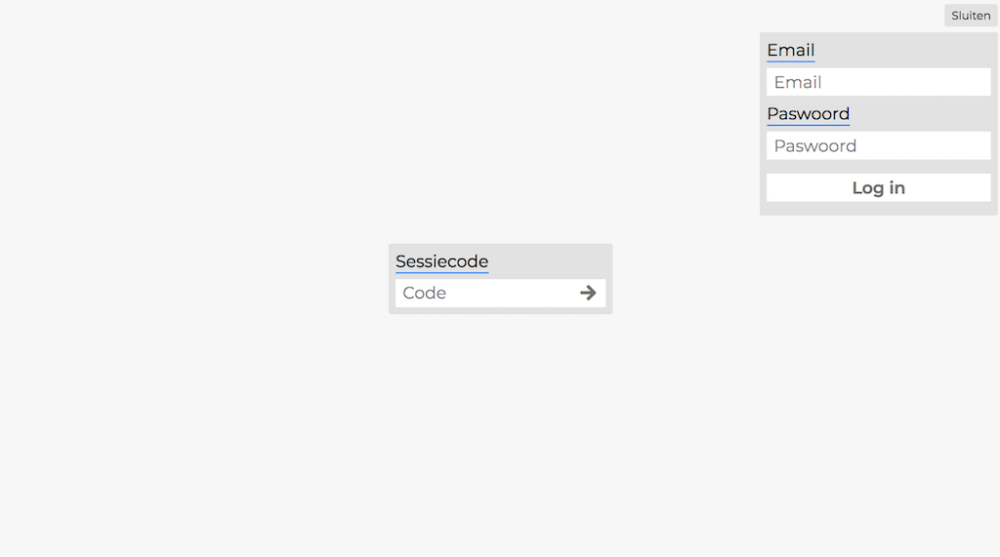
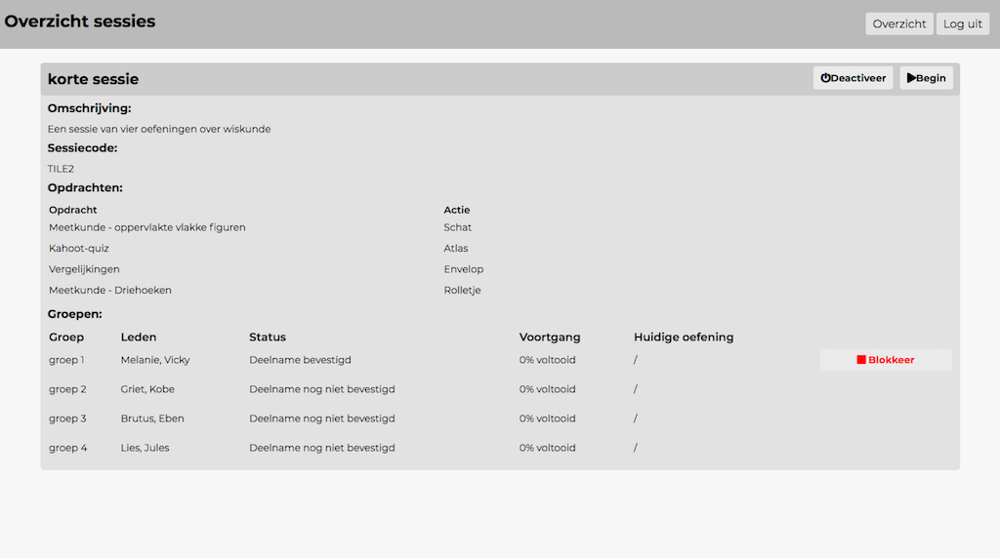
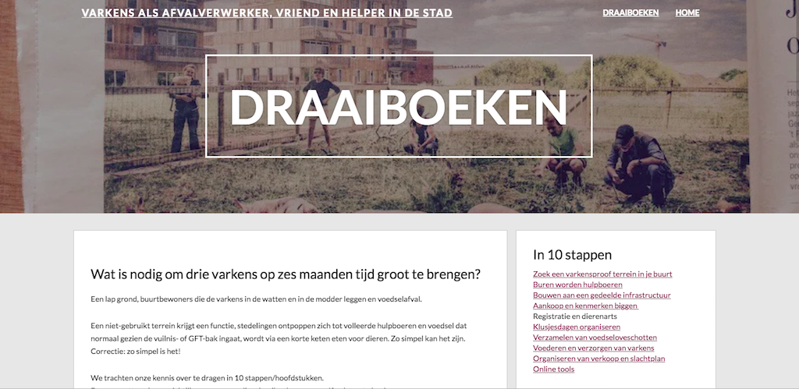

Koninklijk Museum voor Schone Kunsten Antwerpen: IIIF en Catmandu
IIIF is een standaard-in-wording voor de online uitwisseling en presentatie van beelden binnen de cultureel-erfgoedsector. Catmandu is een tool om gestructureerde metadata in een andere vorm te gieten. Ik schreef een script om de metadata en afbeeldingen van honderd kunstwerken van KMKSA in een CSV-bestand om te zetten naar honderd IIIF-manifests via Catmandu. Bekijk het script op GitHub. Lees het volledige verslag op CEST

Een overzicht van beelden in de Mirador viewer
Het is mogelijk om op de beelden in te zoomen en informatie over het schilderij te krijgen
Beelden uit verschillende collecties kunnen via IIIF in eenzelfde viewer bekeken worden
Resurrection Lab
Resurrection Lab is een tweejarig onderzoeksproject van PACKED vzw en iMAL. Het wil een bijdrage leveren aan het opvullen van het hiaat dat vandaag bestaat m.b.t. de expertise over de preservering van born-digital kunstwerken en het gebruik van emulatie. In kader van dit onderzoeksproject werd data gecapteerd van 3,5" en 5,25" diskettes van resp. Liberaal Archief en ADVN. Hiervoor schreef ik twee scriptjes om het capteerproces te automatiseren. Bekijk de scripts op GitHub.

Een opstelling om data van obsolete dragers te capteren.
BreakOutBoxClient
In het kader van het vak 'Projecten II' heb ik samen met twee andere studenten een .NET-applicatie gemaakt om leerlingen spelenderwijs een sessie van oefeningen en acties te laten spelen. De app bestond uit twee delen: enerzijds het spelgedeelte waar de leerlingen zich kunnen inschrijven voor een groepje en de sessie kunnen spelen; anderzijds het admingedeelte waar de leerkracht een sessie kan starten en het verloop van het spel kan volgen.

Het beginscherm. Leerlingen kunnen met een sessiecode naar hun sessie gaan; leerkrachten kunnen naar het adminscherm gaan door in te loggen.
Het adminscherm waar de leerkracht het verloop van de sessie kan volgen.
Website Draaiboeken van Het Spilvarken
Op deze kan je draaiboeken vinden om zelf in je buurt spilvarkens te zetten. De website werd opgezet en gevuld door mij en de andere leden van de Raad van Bestuur. Het maken van de website kaderde in het project Duurzame Wijken van Stad Gent.

Website Het Bijgaardehof
Deze website werd gecreëerd door de themagroep 'Buurt' van de cohousingsgroepen De Wijgaard, De Spore en De Biotope.